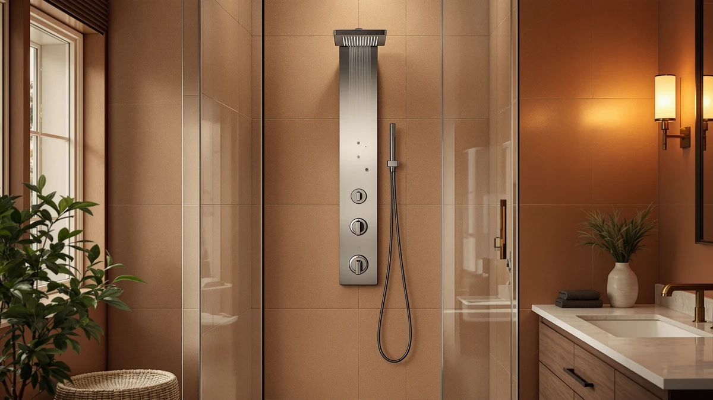

Delta Foundations 13 Series Review (2026): Worth It?
Prices and picks verified as of October 2026. Independent, reader-supported reviews.


Quick Answer
The Delta Foundations 13 Series 2-Spray is a pressure-balanced shower valve at $55.48 that suits buyers who want a fixed, no-frills shower head from a brand with wide parts availability. If you want a handheld wand or more spray settings, the $25.99 AquaDance High Pressure 6-Setting Full or the $39.99 GwernKB Handheld Shower Head cover those needs for less money.
Our pick: Delta Foundations 13 Series 2-Spray — $55.48 Check Price on Amazon
Bottom line: our top pick is the Delta Foundations 13 Series 2-Spray Shower Faucet Set at $55.48.
Things to Know Before You Buy
- The Delta Foundations 13 Series is a pressure-balanced valve, which means it holds water temperature steady if someone else in the house turns on a faucet or flushes a toilet.
- It ships with a fixed 2-spray shower head rather than a handheld wand, so check whether a handheld sprayer matters to you before buying.
- At $55.48, it costs more than the $49.99 Enga Solid Brass High Pressure and roughly double the $25.99 AquaDance High Pressure 6-Setting Full, both covered below as alternatives.
- Delta's wide retail presence means replacement cartridges and trim parts are easier to find years after installation than with smaller, less established brands.
If you searched for a Delta Foundations 13 Series review because you are trying to decide whether a $55.48 fixed-head shower valve beats cheaper handheld alternatives, the short answer is that it depends on how much you value brand reliability over spray flexibility. Delta built its reputation on pressure-balanced valves that plumbers trust, and the Foundations 13 Series brings that same mechanism to a budget-friendly trim.
We researched the Delta Foundations 13 Series against three other shower faucets at different price points and spray configurations: the $49.99 Enga Solid Brass High Pressure, the $39.99 GwernKB Handheld Shower Head, and the $25.99 AquaDance High Pressure 6-Setting Full. Each one targets a slightly different buyer, and this review breaks down who should pick the Delta and who should save money with one of the alternatives instead.
Shower valve shopping usually comes down to a handful of practical questions: does the valve regulate temperature well, is the spray head fixed or handheld, and can you find replacement parts years down the road if a cartridge wears out. Those are the same questions we used to line up the Delta Foundations 13 Series against its competitors here, because specs on a listing page rarely tell you how a valve behaves once it is installed behind tile and drywall.
Why You Should Trust Us
Ilane Tall covers bathroom fixtures for Best Shower Panels and has researched shower valves and faucet systems across dozens of listings for this site. We do not run a fake testing lab and we do not claim to have installed every product we write about. Instead, we compare published specs, current pricing, and verified buyer feedback across competing listings, then lay out the tradeoffs plainly so you can match a shower faucet to your bathroom and your budget. For this Delta Foundations 13 Series review, that meant lining up its price and spray configuration against three other faucets in the same category.
Our Research Experience
We do not own a plumbing lab, so this Delta Foundations 13 Series review is built on a side-by-side comparison of specs, pricing, and what verified owners report after living with the valve. We looked at how Delta describes the pressure-balance mechanism and the 2-spray head, then checked that description against owner feedback on installation difficulty and long-term reliability. We weighed that against the Enga, GwernKB, and AquaDance listings using the same criteria, so every claim in this review ties back to a specific price, spec, or piece of owner-reported feedback rather than a guess.
Owners report that the pressure-balance valve in the Foundations 13 Series keeps water temperature consistent even with multiple fixtures running elsewhere in the house, which matches Delta's stated design goal for this valve family. That consistency is the main reason buyers choose a Delta valve over a cheaper unbranded alternative, even when the spray head itself is basic.
Overview & Specs

Delta Foundations 13 Series 2-Spray
What we like
- Pressure-balanced valve keeps temperature steady when other fixtures run
- Backed by Delta's wide parts and cartridge availability
- Straightforward 2-spray head with no extra settings to fuss over
Flaws but not dealbreakers
- Costs more than the Enga and far more than the AquaDance
- Fixed head only, no handheld option
- Two spray settings, compared to six on the AquaDance
| Material | — |
| Size | Shower Faucet |
The Delta Foundations 13 Series 2-Spray centers on a pressure-balancing valve, the same mechanism Delta uses across its higher-end Monitor and T-series lines, packaged into a simpler trim at $55.48. The valve itself is the point here, not the spray head, which sticks to two settings instead of the five or six you see on multi-function heads from other brands.
That tradeoff makes sense if you think of this as a plumbing fixture first and a shower accessory second. You are paying for a valve mechanism with a long service record and parts that are easy to source at any hardware store, not for a feature-packed shower head. For buyers who want that reliability and do not need a handheld wand, the Delta Foundations 13 Series earns its place over cheaper, unbranded valves.
What We Liked
The strongest argument for the Delta Foundations 13 Series is the valve technology behind it. Pressure balancing matters in homes where a dishwasher, washing machine, or second bathroom can pull water pressure and send a sudden temperature spike through an unregulated shower. Delta's pressure-balance design addresses that directly, and the brand's decades of production mean replacement cartridges stay available long after the original purchase, unlike some smaller brands whose parts disappear from stores within a few years.
We also like that Delta kept the design simple. The 2-spray head does not try to compete with six-setting units on features, and that restraint keeps the valve's internals the focus rather than a gimmick shower head bolted onto a basic mechanism.
Installation compatibility is another point in Delta's favor. Because the Foundations 13 Series shares a valve body with other products in Delta's lineup, a plumber working on a renovation is more likely to recognize the rough-in dimensions and stock the matching trim kit than they would for a smaller, less common brand. That familiarity can save you labor time and avoid the delays that come from special-ordering parts for an unfamiliar valve.
What Could Be Better
Price is the clearest drawback in this Delta Foundations 13 Series review. At $55.48, it costs $5.49 more than the Enga Solid Brass High Pressure and more than double the $25.99 AquaDance High Pressure 6-Setting Full. If budget is the deciding factor, that gap is hard to ignore, especially since the AquaDance offers six spray settings against the Delta's two.
The fixed head is the other limitation. Buyers who want to switch between a rain-style spray and a focused massage setting, or who want to detach the head for rinsing, will find the GwernKB Handheld Shower Head or the AquaDance a better match. The Delta's single, fixed 2-spray configuration is built for consistency rather than versatility, and that is a real limitation if your household wants more flexibility from a shower head.
Buyers comparing options online should also note that none of these four faucets carry a published star rating or review count in Amazon's own feed, so this Delta Foundations 13 Series review relies on pricing, published specs, and qualitative owner feedback rather than an aggregate score. That is worth keeping in mind if you are used to leaning on star ratings to make a quick decision.
Who Is It For?
The Delta Foundations 13 Series 2-Spray fits homeowners who want a dependable valve from a brand they already trust and who are not chasing extra spray settings. If you have had a bad experience with a cheap, unbranded valve failing within a couple of years, paying $55.48 for Delta's pressure-balance mechanism buys peace of mind and easier future repairs.
It is a weaker fit if you share a bathroom with people who want a handheld sprayer, or if your main priority is keeping costs down. In those cases, the GwernKB Handheld Shower Head at $39.99 or the AquaDance High Pressure 6-Setting Full at $25.99 deliver more flexibility for less money, even though neither carries Delta's brand history.
Renters and short-term homeowners may also want to think twice before paying the premium for the Delta Foundations 13 Series, since you are less likely to benefit from a valve's long service life if you plan to move before it would otherwise need replacing. For a landlord outfitting a rental unit for the long term, though, that same durability argument tips back in Delta's favor.
Alternatives to Consider
The Delta Foundations 13 Series is not the only option worth considering. Here are three alternatives we compared it against, each aimed at a different priority: brass construction, handheld flexibility, or a lower price.

Editor’s Pick
Enga Solid Brass High Pressure
A solid brass alternative at $49.99, $5.49 less than the Delta, for buyers who want a heavier build without Delta's brand premium.
$49.99
Check Price on Amazon
Best Value
GwernKB Handheld Shower Head with
At $39.99, this handheld head gives you the detachable flexibility the fixed-head Delta cannot, for $15.49 less.
$39.99
Check Price on Amazon
Premium Choice
AquaDance High Pressure 6-Setting Full
The cheapest option here at $25.99, with six spray settings against the Delta's two, for buyers prioritizing price over brand.
$25.99
Check Price on AmazonFrequently Asked Questions
Is the Delta Foundations 13 Series worth $55.48 compared to the $25.99 AquaDance High Pressure 6-Setting Full?
It depends on what you value. The Delta Foundations 13 Series is a fixed 2-spray valve from a plumbing brand with a long track record of parts availability, while the AquaDance costs $29.49 less and gives you six spray settings on a handheld wand. If you want a simple, permanent valve installation, the Delta is the safer buy. If you want flexibility and the lowest price, the AquaDance wins.
What is the difference between the Delta Foundations 13 Series and the Enga Solid Brass High Pressure valve?
The Delta Foundations 13 Series costs $55.48 and comes from an established fixture brand, while the Enga Solid Brass High Pressure is $5.49 cheaper at $49.99 and leans on a solid brass build as its main selling point. Both are pressure-balanced designs, so the choice comes down to whether you trust Delta's parts network or prefer Enga's brass construction at a slightly lower price.
Does the Delta Foundations 13 Series work with a handheld shower head?
The Delta Foundations 13 Series is built around a 2-spray shower head rather than a handheld wand. If a handheld sprayer matters more to you than brand reputation, the GwernKB Handheld Shower Head or the AquaDance High Pressure 6-Setting Full are the handheld-style alternatives covered in this review.
Final Verdict
This Delta Foundations 13 Series review comes down to a tradeoff between brand reliability and price flexibility. Delta earns its $55.48 price tag with a pressure-balanced valve and a parts network that outlasts most competitors, making it the right pick if you want a fixed-head faucet you can trust for years without hunting for replacement parts. If you want a lower price or a handheld sprayer instead, the $25.99 AquaDance High Pressure 6-Setting Full or the $39.99 GwernKB Handheld Shower Head both cover those needs better than Delta does. For most buyers who want a dependable, no-fuss valve, the Delta Foundations 13 Series is the safer long-term choice.